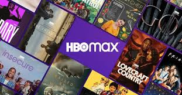

Possibilitando o acesso a varios filmes e série com algumas sendo exclusiva. Sendo um dos streaming mais utilizados desde de antes da pandemia de 2020, causado pelo COVID-19. Mesmo depois de temto tempo a Netflix é utilizada e atualizada recorrentemente trazendo diversas novidades.

possibila o acesso a vários fimes e séries com outras sendo exclusiva. HBO vem ganhado espaço no nosso meio, pe só ficou realmnete reconhecida recentemente
Um App de streaming de Músicas e Podcats, que vem ganhando espaço por conta do seu premium permite escutar musicas offline, e com a queda do play musica do google ficou com menor concorrencia.